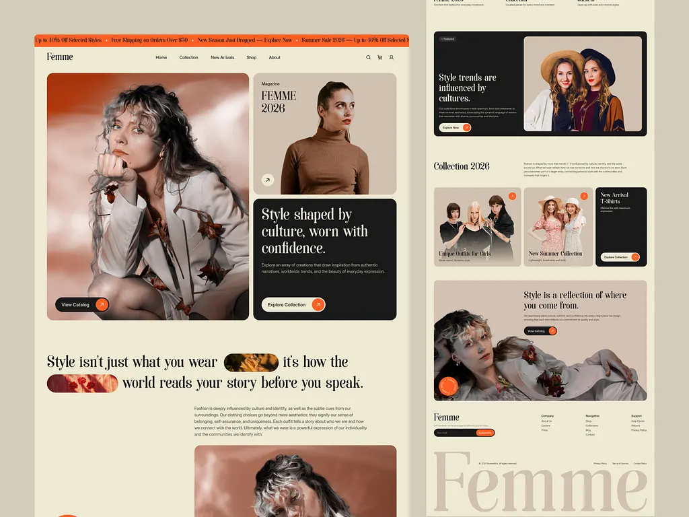
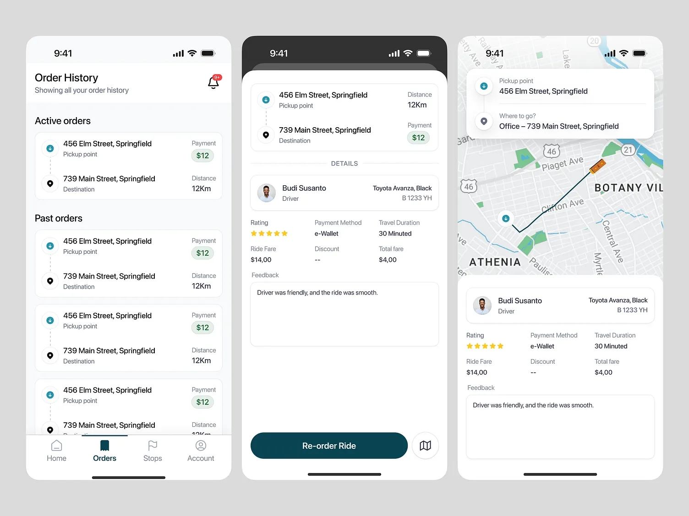
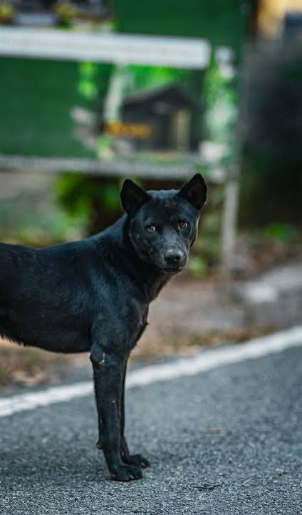

Soft texture
WEBPbackground-3.webp
Already compressed WebP. A useful check for skipped transformations.
Open image response ↗A small collection of real images to put your optimization pipeline to the test. Compare what you send with what the browser receives.
HTML + CSS · No client-side image processingOriginal bytes. Real files. No framework optimizer.
background-3.webp
Already compressed WebP. A useful check for skipped transformations.
Open image response ↗
remyshop.webp
Small text and photographic detail in one asset.
Open image response ↗
rideshare.webp
Check sharp edges, small labels, and compression artifacts.
Open image response ↗
large-page.png
A full-length screenshot, served unchanged at the origin. Useful for testing compression on a larger source.
Open image response ↗A repeatable check in your browser
Open DevTools → Network, enable Disable cache while DevTools is open, select the Img filter, then reload the page.
Select each image. In Headers, find X-HubProxy-Image, Content-Type, and Vary. Record the actual header value; a loaded image alone does not prove optimization.
Compare the response body size with the original bytes above. Repeat with phone, tablet, and desktop emulation, reloading after every change. Inspect the image for visual damage.
Savings (%) = (1 − response body bytes ÷ original bytes) × 100. Compare the decoded HTTP response body bytes for the image, excluding response headers. Browser memory/disk-cache transfers and a 304 response do not represent the full image size.
These images intentionally use a plain source URL without pre-generated responsive variants. CSS changes their displayed size, but does not itself reduce image downloads. A different response requires optimization rules and relevant request signals. Check the actual request client hints and response Vary header; changing only the viewport does not prove the server received those hints.
This page uses only HTML and CSS, so live response headers are available in your browser’s Network panel. Displayed source sizes are fixed reference measurements. No simulated optimization scores or success labels are shown.